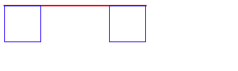
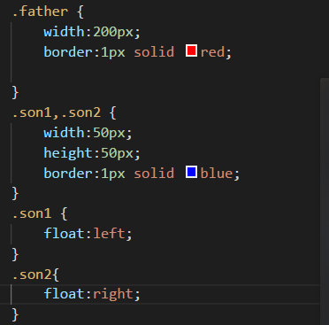
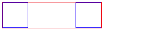
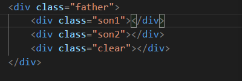
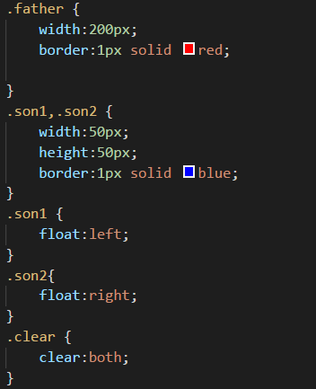
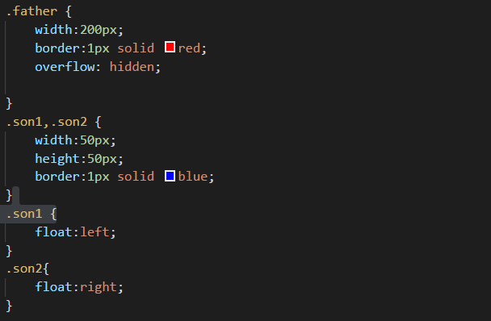

##css清除浮动
css 清除浮动的方法
浮动产生的前提是子元素用了float导致不能撑开父元素
浮动产生的作用：
1.父元素背景颜色不显示（如果对父元素设置了背景颜色，图片 由于父元素高度为0所有背景不显示）
2.边框不能显示
3.margin padding 不能正确显示
css解决浮动清除浮动的方法：
首先说明我们现在有三个div 一个父div 连个子div 子div一个float:left 一个float：righ



1.对父元素设置高度
2.clear:both 我们需要新建一个样式选择器 .clear {clear:both} 然后我们在子元素的最后加如<div class="clear"></div>效果和代码如下



父div overflow:hidden;效果和代码如下

为什么overflow:hidden能清除浮动呢overflow:hidden的意思是超出的部分要裁切隐藏掉那么如果 float 的元素不占位置普通流的包含块要根据内容高度裁切隐藏如果高度是默认值auto那么不计算其内浮动元素高度就裁切就有可能会裁掉float所以如果没有明确设定容器高情况下它要计算内容全部高度才能确定在什么位置hidden浮动的高度就要被计算进去顺带达成了清理浮动的目的